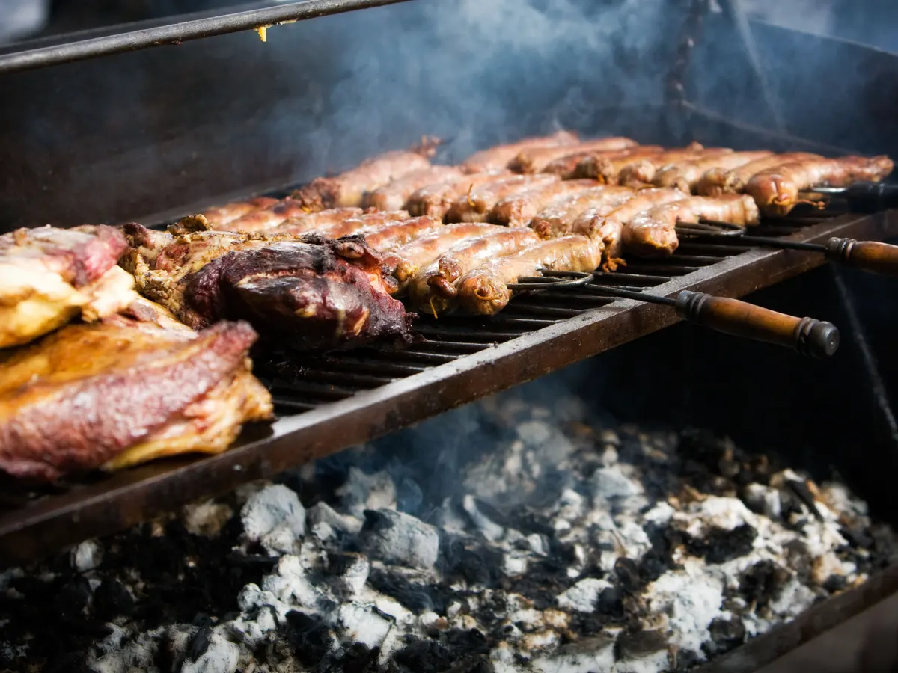

It´s Barbacue Day!
On the 12 May

What to bring (Food):
- Beef
- Chicken
- Pork
- Sausages
- Chips
- Salad
- Bread & Butter
- An appetite (There will be lots of food)
What to bring (Drinks):
- Red Wine
- Beer
- Poncha
- Water
- Chips
This is where you need to go:
Google Maps Location